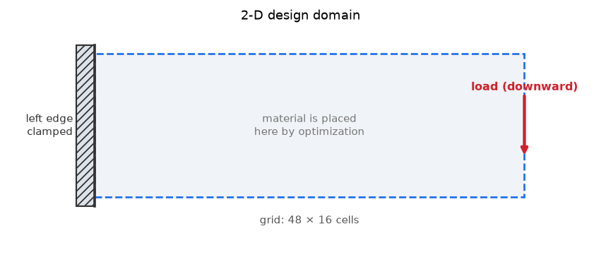
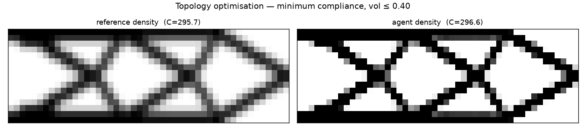
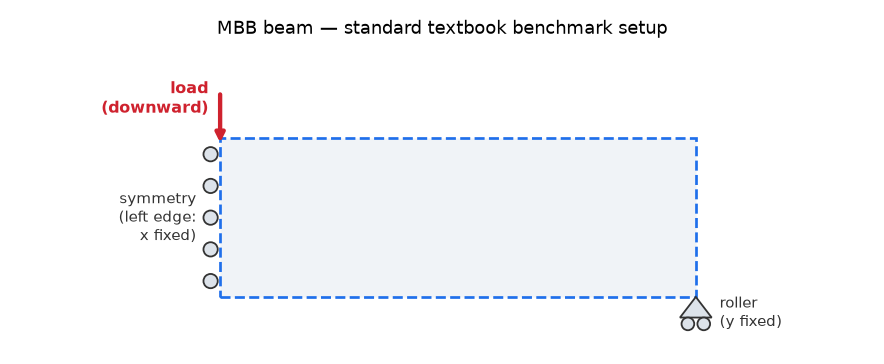
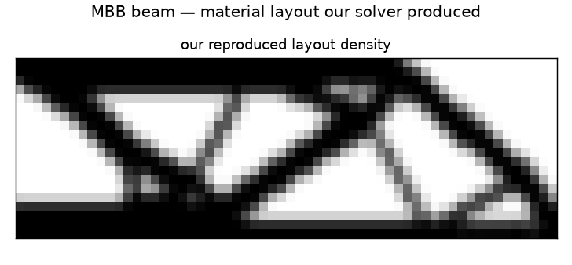
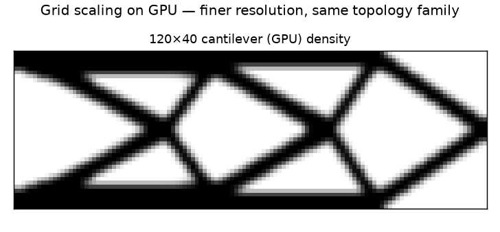

Topology optimization on a differentiable simulator — the agent writes its own optimizer.
Can the agent invent the best material layout from scratch? This is topology optimization — deciding which parts of a region should be solid and which empty to make the stiffest possible structure from a fixed amount of material. The twist: the agent is handed a differentiable physics simulator (one that also returns gradients — the sensitivity of stiffness to each cell's material) and must write its own gradient-based optimizer to solve it.

The design region: left edge clamped, load pulling down at the right. The optimizer chooses where to put the limited material.
| Design region | A 2-D rectangle, 48 × 16 cells, each cell solid or empty |
| How it is held | The entire left edge is clamped (fixed) |
| Load | A downward force at the middle of the right edge |
| Material budget | At most 40% of the region may be solid |
| Goal | Minimize compliance (flexibility) = maximize stiffness |
Compliance of the agent's layout versus a reference optimum we compute the same way, and — crucially — an independent recompute of the agent's reported number from its saved design (to rule out a fabricated result). Lower compliance is better.

Both reach the classic cantilever truss; the agent's layout is visually and numerically equivalent to the reference (darker = solid material).
| compliance vs reference | +0.31% PASS |
| reported = independently recomputed | EXACT (296.60 vs 296.60) |
| volume constraint | 0.400 ≤ 0.40 PASS |
| optimiser | OC + bisection over 76 iters — agent-authored |
| no peeking at the answer | CLEAN the agent's own files never read the stored answer or grader |
The agent was given only a differentiable forward model (jaxfem.py) and wrote its own optimiser from jax.value_and_grad; compliance was recomputed from the saved density.
The agent above is scored against a reference we compute ourselves. To show that reference is correct, we check our simulator against two targets defined outside this project:
Check 1 — does the simulator match textbook physics? PASS
For a plain uniform beam, the simulator's predicted tip deflection should equal the analytical beam-theory formulas. Euler–Bernoulli is the simple formula; Timoshenko adds the shear-deformation term it omits. L/h is the beam's length-to-height (slenderness) ratio.
| L/h = 10 | vs Euler–Bernoulli +0.1% · vs Timoshenko -0.67% |
| L/h = 20 | vs Euler–Bernoulli -0.7% · vs Timoshenko -0.86% |
| L/h = 3 | vs Euler–Bernoulli +8.9% · vs Timoshenko +0.21% |
Largest error versus Timoshenko = 0.86%. The short, stubby beam (L/h = 3) shows Euler–Bernoulli breaking down while Timoshenko still holds — the same shear correction the CalculiX solver showed in Trial 1.
Check 2 — does it reproduce a famous published benchmark?
The MBB beam (Messerschmitt-Bölkow-Blohm, the standard textbook topology-optimization problem) has a well-known optimal shape. Setup: the left edge is a symmetry plane (rollers), a single roller supports the bottom-right corner, and a downward load sits at the top-left.


Our solver reproduces the textbook MBB layout (solid top and bottom chords with a triangulated web of diagonals). Our stiffness measure (compliance) is 218.5; the published number depends on solver settings (roughly 200–220), so the shape match is the rigorous check, not a single number.

GPU unblocked (RTX 5080). At 48×16 the GPU run is bit-identical to CPU and ~4× faster; at 120×40 (ndof 9922) it runs in ~70 s — the dense direct solve is the wall, which is exactly why the next step is a sparse / real-JAX-FEM solver.
| agent | Here, an AI agent: the large language model does the engineering work itself — writing the solver input, running it, reading the results, and deciding the next step — instead of a human driving the tool. |
| topology optimization | Deciding the optimal layout of material within a region — which parts should be solid and which empty — for a given amount of material. |
| compliance | A measure of flexibility (force × displacement at the load). Lower compliance = stiffer structure, so minimizing compliance maximizes stiffness. |
| differentiable FEM | A finite-element solver written so you can compute exact gradients of the result with respect to the design (via automatic differentiation) — which is what lets a gradient-based optimizer improve the design. |
| SIMP | Solid Isotropic Material with Penalization — the standard topology-optimization scheme that treats each cell’s density as a design variable and pushes intermediate “grey” values toward fully solid or fully empty. |
| OC | Optimality Criteria — a classic, fast update rule for topology optimization. |
| MBB beam | Messerschmitt-Bölkow-Blohm beam — the canonical textbook benchmark problem in topology optimization. |
| Euler–Bernoulli | Classic beam theory giving a closed-form formula for deflection; it ignores shear deformation, so it is slightly off for short, stubby beams. |
| Timoshenko | Beam theory that adds the shear-deformation term Euler–Bernoulli omits; accurate for stubby beams too. |
| GPU | Graphics Processing Unit — massively parallel hardware that accelerates the linear algebra in the solver. |
| ndof | Number of degrees of freedom — the count of unknown displacements the solver computes (roughly, 2 or 3 per mesh node in 2-D / 3-D). |
experiment folder on GitHub — README, config.yaml, results/, agent transcripts & authored code.